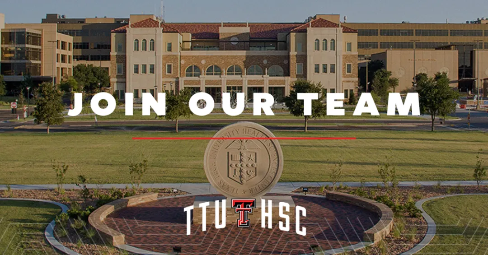
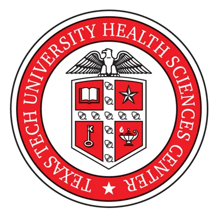

又中新项目了|美国德州理工大学，健康科学中心诚招生物信息学博士后
原文：https://mp.weixin.qq.com/s?__biz=MzAwMzIzOTk5OQ==&mid=2247531646&idx=2&sn=52795adf63d33458a3236387f276274b&chksm=9b3c052eac4b8c3876b2ff6bb7fe849cb38949a9a837d811eeb0f168c8e825eacae02be74de7#rd 合集：求职/求学/招聘
01
写在前面
我们长期发布招聘/求职板块(甚至我给自己都发了求职：Biomamba求职| 国奖+4篇一作SCI)，欢迎各位老师/老板欢迎联系~我们也在招贤纳士：Biomamba生信基地诚招运营。其它需要求职的小伙伴也欢迎把简历发给我们[Biomamba_zhushou]，大家一起找工作/学习。用人单位也可以联系我们免费刊登招聘信息~
02
ABOUT US

本课题组（www.dllab.org）现有成员6 名，因新课题发展需要，现诚聘基因组生物信息学 方向博士后2-3名 。课题组研究方向包括基因组学数据分析及相关软件开发 ，尤其人类基因组中转座子（Transposable Element）、外源病毒基因组插入和泛基因组等 相关研究及在人类疾病研究中应用。课题组拥有世界领先的特色疾病组学原始数据、高性能计算 HPC、病人样品等资源和设施。课题组资金充足，项目丰富。组员可根据个人兴趣和专长选择研究课题。
03
JOIN US
课题组正处于稳步发展阶段，欢迎具备HPC 及组学FASTQ数据分析经验 的申请者，无论您研究人类疾病，还是动物、植物或微生物 。具备生信软件开发经验 或转座子/外源序列插入研究 经验者尤为鼓励 。学校提供一流的科研环境和广阔的职业发展机会，优秀博士后有机会晋升 为 Faculty 职位，并可在拟建的组学生物信息学研究中心任职。薪酬和福利待遇极具竞争力（底薪加奖金 ）。我们热诚欢迎有志之士加入我们的团队，共同攀登科研高峰！
正在接收 申请。
课题组链接：https://dllab.org/
招聘详情点击各链接：
**
博士后：
https://dllab.org/positions/postdoc.pdf
感兴趣的同学请将CV发送至：dllab.bioinformatics@gmail.com。
学校位于风景如画的大学城Lubbock，气候温暖舒适，非常适合科研创新（见课题组网站照片）。本校拥有庞大且历史悠久的华人学生和学者团体。当地民风淳朴，物价低廉，无州税 ，生活便捷，交通便利（中美运输集散中心之一）。Lubbock 市内有众多中餐馆和亚洲超市，且距达拉斯较近。我们期待您的申请！
此广告全文请参见：
https://dllab.org/positions/positions_CN.pdf


最后聊聊

德州理工大学健康科学中心（Texas Tech University Health Sciences Center）全美医学排名前一百，其中临床全美排名第五 （ U.S. News ）。德州理工大学是美国第二大大学（占地 1900英亩），也是德州唯一一所集本科、研究生院、法学院和医学院于一体的综合性R1 大学。